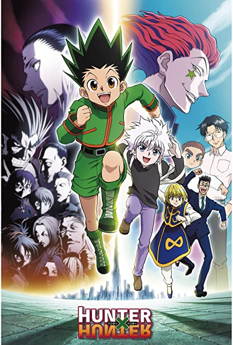

Anime

Les frères Elric (Edward et Alphonse) ont hérité leur talent d'alchimiste de leur père qui a quitté le foyer familial sans jamais revenir. À la suite de la mort de leur mère, les deux jeunes tentent de la faire revivre grâce à l'alchimie, en faisant une transmutation humaine malgré l'interdit.

Abandonné par son père qui est un Hunter, à la fois un aventurier et un chasseur de primes, Gon décide à l'âge de 12 ans de partir pour devenir un Hunter. Cela ne sera pas chose aisée, il devra passer une suite de tests et examens en compagnie de milliers d'autres prétendants au titre de Hunter.